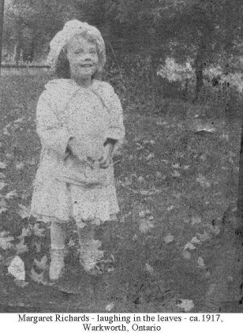

Our Photographs
![[floral bar]](../graphics/1bar.gif)
We have lots of photographs, both old and current, that reflect our family. We're putting them up in various ways, as you will see below.
To conserve on the time it takes these pages to load, most of the pictures are NOT in a form that will give you good results if you try to print them. If a few of them catch your fancy, let Linda know at the e-mail address on our main page, and she will be happy to send you files more suitable for printing (if she has them--some are just basically bad quality).
![[link to family album page]](../graphics/familyalbum.GIF) Family Album. Check out our progress--is your picture there yet?
Family Album. Check out our progress--is your picture there yet?
Mystery photos. We've got the pictures. But we don't know who they are except that they're probably ours.
Ethel's Mysteries.Pictures found in Ethel McKague's album with crucial information missing. Posting them has already succeeded in identifying one!
Communities. Do you wonder what McKague, Saskatchewan looks like, or how Castleton, Ontario looked to our early settlers there?
Collections. These will change from time to time. Look here for, among other things, the first McKague/McGregor Family Reunion, 1999, and for our wedding collection.
![[link to mckague.com]](../graphics/m.GIF) Back to mckague.com
Back to mckague.com
mckague.com Our Genealogy Page Our Photographs Links Pure Gold Credits